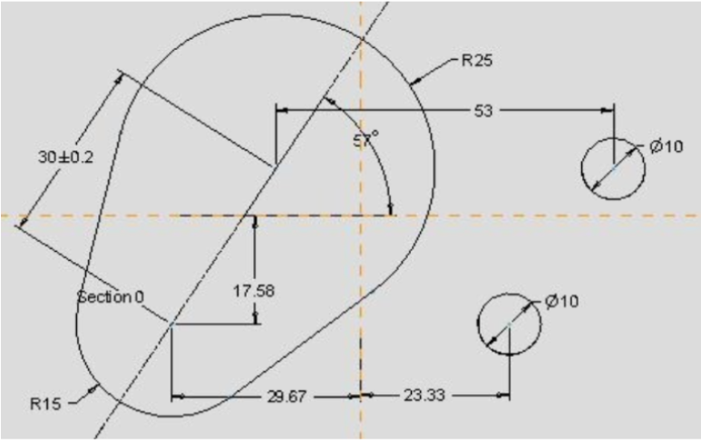

Для последовательного штампа с жестким съемником прототипом рабочей зоны служат рабочие отверстия матрицы штампа. При выполнении данного пункта меню, контура рабочей зоны загружаются в эскиз и управление передается в систему Pro/ENGINEER. Конечному пользователю следует открыть эскиз для редактирования и проставить необходимые размеры и другие параметрические зависимости. Сами контура не должны изменяться. Этот эскиз создан по размерам штампуемой детали и проставляемые размеры соответствуют размерам исходной детали (рис.3.8). В дальнейшем эти размеры будут пересчитаны в исполнительные размеры и по ним будут созданы рабочие отверстия и детали штампа.
Рис. 3.8 Прототип рабочей зоны для штампуемой детали